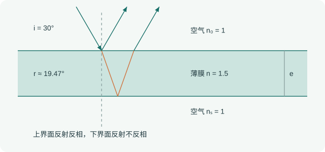
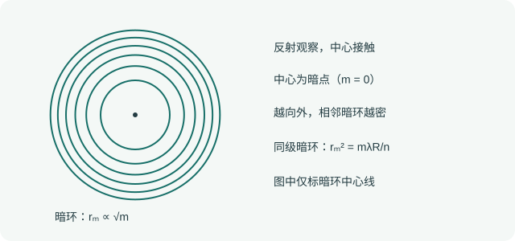

本章目录 · 跳转知识点与练习 本章公式联系 总入口：光程决定相位，相位决定强度 双缝与劳埃德镜：光程差怎样变成屏上坐标 薄膜：为什么是 2ne cos r，何时加半波 劈尖：把厚度条件转换为条纹位置、数量和移动 牛顿环：先推球面厚度，再推半径平方 迈克耳孙：用光程变化测长度，用相干性限制可见度 单缝：连续子波相加，得到暗纹与衍射包络 圆孔与分辨率：一个点也会形成光斑 光栅：单缝包络 × 多缝相干叠加 光谱重叠与晶体衍射：把波长作为未知量 偏振与检偏：先投影电场，再平方求光强 反射起偏：布儒斯特角来自反射与折射的几何 双折射与波片：相同方向传播，两个分量积累不同相位 偏振光干涉与鉴别：把相位差重新变成可见强度 教材目录补充：液晶如何把电压变成明暗 教材目录补充：从费马原理到平面、球面成像 教材目录补充：薄透镜、组合与光学仪器 章末重点题型与详细解析 课件对照 本章推导主线
这些公式怎样连起来 1 电场合成 → 光强 I = I 1 + I 2 + 2 I 1 I 2 cos Δ φ I=I_1+I_2+2\sqrt{I_1I_2}\cos\Delta\varphi I = I 1 + I 2 + 2 I 1 I 2 cos Δ φ 先解释为什么相位决定亮暗，也解释暗纹为何不一定全黑。
阅读这一段推导 ↓ 2 光程 → 相位差 Δ φ = Δ φ 0 − 2 π Δ L / λ + Δ φ r e f l \Delta\varphi=\Delta\varphi_0-2\pi\Delta\mathcal L/\lambda+\Delta\varphi_{\rm refl} Δ φ = Δ φ 0 − 2 π Δ L / λ + Δ φ refl 初相、传播、反射三项齐全，再把装置光路代进去。
阅读这一段推导 ↓ 3 不同几何 → 不同条纹 Δ L ≈ d x / D 或 2 n e cos r \Delta\mathcal L\approx dx/D\quad\text{或}\quad2ne\cos r Δ L ≈ d x / D 或 2 n e cos r 双缝、薄膜、劈尖、牛顿环、迈克耳孙是同一个明暗条件的不同几何实现。
阅读这一段推导 ↓ 4 连续孔径 → 单缝包络 I / I ( 0 ) = ( sin β / β ) 2 I/I(0)=(\sin\beta/\beta)^2 I / I ( 0 ) = ( sin β / β ) 2 许多子波相加造成衍射，孔径有限也就存在分辨极限。
阅读这一段推导 ↓ 5 周期排列 → 光栅主峰 d sin θ = m λ d\sin\theta=m\lambda d sin θ = mλ 单缝包络乘多缝干涉因子，连起缺级、光谱重叠与峰宽。
阅读这一段推导 ↓ 6 方向分解 → 相位延迟 → 再投影 I ⊥ = I 1 sin 2 2 α sin 2 ( δ / 2 ) I_\perp=I_1\sin^22\alpha\sin^2(\delta/2) I ⊥ = I 1 sin 2 2 α sin 2 ( δ /2 ) 马吕斯定律管投影，波片管相位；合起来才是偏振光干涉。
阅读这一段推导 ↓ 阅读顺序： 先读每节的问题与推导，再用“易错辨析”检验条件。长公式与模型图可横向滑动；正文推导默认展开。
本章查找
正文、公式与解析无需 JavaScript 也可阅读；搜索、判分和进度记录需启用 JavaScript。
先把光当成电场振动，后讨论亮暗 两束光在同一点相遇，先相加的是电场，而不是光强。这正是第 9 章同方向、同频率振动合成在光学中的应用。以下 λ \lambda λ 真空波长 ，空气近似真空；均匀介质中波长是 λ / n \lambda/n λ / n
E = E 1 + E 2 , I = I 1 + I 2 + 2 I 1 I 2 cos Δ φ . \begin{aligned}E&=E_1+E_2,\\ I&=I_1+I_2+2\sqrt{I_1I_2}\cos\Delta\varphi .\end{aligned} E I = E 1 + E 2 , = I 1 + I 2 + 2 I 1 I 2 cos Δ φ . 上式用于同频、相干、偏振方向平行的光。交叉项保留，才产生稳定的干涉；相位随机快速变化时，时间平均交叉项消失，只剩 I 1 + I 2 I_1+I_2 I 1 + I 2
从“走多远”转换成“落后多少相位” 光程 L \mathcal L L E ∝ cos ( ω t − k r + φ 0 ) E\propto\cos(\omega t-kr+\varphi_0) E ∝ cos ( ω t − k r + φ 0 )
L = ∫ n d s , Δ L = L 2 − L 1 , Δ φ = Δ φ 0 − 2 π λ Δ L + Δ φ r e f l . \begin{aligned}\mathcal L&=\int n\,\mathrm ds,\qquad \Delta\mathcal L=\mathcal L_2-\mathcal L_1,\\ \Delta\varphi&=\Delta\varphi_0-\frac{2\pi}{\lambda}\Delta\mathcal L+\Delta\varphi_{\rm refl}.\end{aligned} L Δ φ = ∫ n d s , Δ L = L 2 − L 1 , = Δ φ 0 − λ 2 π Δ L + Δ φ refl . 因此，画光路 → 算光程差 → 加初相与反射相变 → 判明暗 是所有干涉题的同一流程。只讨论强度时可将整个相位差反号，因为余弦为偶函数；讨论条纹移动时必须保持同一顺序，不能单独改某一项的符号。
Δ φ = 2 m π ⟹ I max = ( I 1 + I 2 ) 2 , Δ φ = ( 2 m + 1 ) π ⟹ I min = ( I 1 − I 2 ) 2 . \begin{aligned}\Delta\varphi=2m\pi&\Longrightarrow I_{\max}=(\sqrt{I_1}+\sqrt{I_2})^2,\\ \Delta\varphi=(2m+1)\pi&\Longrightarrow I_{\min}=(\sqrt{I_1}-\sqrt{I_2})^2.\end{aligned} Δ φ = 2 mπ Δ φ = ( 2 m + 1 ) π ⟹ I m a x = ( I 1 + I 2 ) 2 , ⟹ I m i n = ( I 1 − I 2 ) 2 . 仅当两束等强时，暗纹才完全为零。若各束强度均为 I s I_s I s I = 4 I s cos 2 ( Δ φ / 2 ) I=4I_s\cos^2(\Delta\varphi/2) I = 4 I s cos 2 ( Δ φ /2 ) 推导补充： 完全相干、同偏振时的条纹可见度
V = I max − I min I max + I min = 2 I 1 I 2 I 1 + I 2 . V=\frac{I_{\max}-I_{\min}}{I_{\max}+I_{\min}}=\frac{2\sqrt{I_1I_2}}{I_1+I_2}. V = I m a x + I m i n I m a x − I m i n = I 1 + I 2 2 I 1 I 2 . 为何通常要“同源分光” 分波阵面（双缝）或分振幅（薄膜、迈克耳孙），都让同一束光的两部分重逢，以保持相位关系。频率相同并不自动相干；还需要相位差在观察时间内稳定，并有共同偏振分量。过宽的扩展光源会让不同点产生的条纹彼此错开，降低空间相干性。
把推导用到题目中 明确波长是在真空还是介质中给出的，统一为同一种定义。 给两条光路编号，写出包含入射段的完整光程。 求总相位差，先判极大或极小，再代入装置几何。 易错辨析 “反相”只保证相减；只有等振幅才完全相消。相干不是“颜色相同”的同义词。
合上笔记，自检一次 不看公式表，你能从两路电场解释为什么要先算相位差吗？
模型图对应正文中的约定；窄屏可横向滑动。 同一相位条件，配上双缝几何 取上缝为 S 1 S_1 S 1 S 2 S_2 S 2 x > 0 x>0 x > 0 d d d D ≫ d D\gg d D ≫ d
Δ L = r 2 − r 1 ≈ d sin θ ≈ d x D , 明纹： x m = m λ D d , 暗纹： x m = ( m + 1 2 ) λ D d , m ∈ Z , Δ x = λ D d . \begin{aligned}\Delta\mathcal L&=r_2-r_1\approx d\sin\theta\approx\frac{dx}{D},\\ \text{明纹： }x_m&=m\frac{\lambda D}{d},\\ \text{暗纹： }x_m&=\left(m+\frac12\right)\frac{\lambda D}{d},\qquad m\in\mathbb Z,\\ \Delta x&=\frac{\lambda D}{d}.\end{aligned} Δ L 明纹： x m 暗纹： x m Δ x = r 2 − r 1 ≈ d sin θ ≈ D d x , = m d λ D , = ( m + 2 1 ) d λ D , m ∈ Z , = d λ D . 等间距不是干涉的普遍特征，而是这里光程差与 x x x n n n Δ x = λ D / ( n d ) \Delta x=\lambda D/(nd) Δ x = λ D / ( n d )
插片与移动：重新令总光程差为零 在上缝一路插入厚度 e e e n n n ( n − 1 ) e (n-1)e ( n − 1 ) e n e ne n e
Δ L ≈ d x D − ( n − 1 ) e , x m = D d [ m λ + ( n − 1 ) e ] , x 0 = D ( n − 1 ) e d , x 0 Δ x = ( n − 1 ) e λ . \begin{aligned}\Delta\mathcal L&\approx\frac{dx}{D}-(n-1)e,\\ x_m&=\frac{D}{d}\big[m\lambda+(n-1)e\big],\\ x_0&=\frac{D(n-1)e}{d},\qquad\frac{x_0}{\Delta x}=\frac{(n-1)e}{\lambda}.\end{aligned} Δ L x m x 0 ≈ D d x − ( n − 1 ) e , = d D [ mλ + ( n − 1 ) e ] , = d D ( n − 1 ) e , Δ x x 0 = λ ( n − 1 ) e . x 0 > 0 x_0>0 x 0 > 0
多波长与镜面反射 两种波长的明纹重合需要 m 1 λ 1 = m 2 λ 2 m_1\lambda_1=m_2\lambda_2 m 1 λ 1 = m 2 λ 2 400 n m 400\,\mathrm{nm} 400 nm 600 n m 600\,\mathrm{nm} 600 nm m 1 = 3 , m 2 = 2 m_1=3,m_2=2 m 1 = 3 , m 2 = 2
劳埃德镜可把反射束看成来自虚光源；实际光源离镜面 h h h 2 h 2h 2 h π \pi π δ g ≈ 2 h sin θ \delta_g\approx2h\sin\theta δ g ≈ 2 h sin θ δ g = ( m + 1 / 2 ) λ \delta_g=(m+1/2)\lambda δ g = ( m + 1/2 ) λ
把推导用到题目中 标清正方向，写源到缝、缝到屏及插片的全部光程差。 先求零级中心，再求各级位置和相邻间距。 多波长题列整数级次关系；镜面题补反射相位。 易错辨析 移动光源与移动条纹不应凭图感猜方向。理想透镜使同一波阵面的光在焦点等光程，不能说任意两条经过透镜的光路都等光程。
合上笔记，自检一次 在上缝插片后，能用带符号的光程差推导中心移动方向吗？

模型图对应正文中的约定；窄屏可横向滑动。 先取同一个出射波阵面比较两束光 设外侧、薄膜、基底折射率依次为 n 0 , n , n s n_0,n,n_s n 0 , n , n s e e e i i i r r r 2 e / cos r 2e/\cos r 2 e / cos r
δ g = 2 n e cos r − n 0 ( 2 e tan r ) sin i , n 0 sin i = n sin r , ∴ δ g = 2 n e cos r = 2 e n 2 − n 0 2 sin 2 i . \begin{aligned}\delta_g&=\frac{2ne}{\cos r}-n_0(2e\tan r)\sin i,\\ n_0\sin i&=n\sin r,\\ \therefore\ \delta_g&=2ne\cos r=2e\sqrt{n^2-n_0^2\sin^2 i}.\end{aligned} δ g n 0 sin i ∴ δ g = cos r 2 n e − n 0 ( 2 e tan r ) sin i , = n sin r , = 2 n e cos r = 2 e n 2 − n 0 2 sin 2 i . 相变只看两束的差，不看总共反射几次 透明非磁介质、近法线入射时，由低折射率向高折射率界面反射，电场反相 π \pi π m m m
相对反射相变 反射加强 反射减弱 一次相对反相：π \pi π 2 n e cos r = ( m + 1 / 2 ) λ 2ne\cos r=(m+1/2)\lambda 2 n e cos r = ( m + 1/2 ) λ 2 n e cos r = m λ 2ne\cos r=m\lambda 2 n e cos r = mλ 两次抵消或都无：0 0 0 2 n e cos r = m λ 2ne\cos r=m\lambda 2 n e cos r = mλ 2 n e cos r = ( m + 1 / 2 ) λ 2ne\cos r=(m+1/2)\lambda 2 n e cos r = ( m + 1/2 ) λ
课件将一次相对反相写成“光程差加 λ / 2 \lambda/2 λ /2
等倾条纹与增透膜，都由上式继续推出 厚度固定时，方向相同（r r r r = 0 r=0 r = 0 2 n e cos r 2ne\cos r 2 n e cos r
若 n 0 < n < n s n_0<n<n_s n 0 < n < n s 2 n e = ( m + 1 / 2 ) λ 2ne=(m+1/2)\lambda 2 n e = ( m + 1/2 ) λ e = λ / ( 4 n ) e=\lambda/(4n) e = λ / ( 4 n ) n 2 = n 0 n s n^2=n_0n_s n 2 = n 0 n s
理想无吸收膜的总反射与透射强度互补：反射弱则透射强。透射题应说明这一能量条件，不能不判结构就背反射、透射各一套明暗公式。
把推导用到题目中 先画三层介质并判断两次反射的相对相变。 用折射定律求膜内角度，写几何光程差。 代相长或相消条件，列出允许级次，再选最小正厚度或可见波长。 易错辨析 膜内角是 r；用外侧入射角 i 直接代 cos r 会错。等倾条纹中心的阶数通常高，不能套接触牛顿环的零级中心。
合上笔记，自检一次 为什么膜内往返光程 2ne/cos r 还不是最终的光程差？
厚度线性变化，所以条纹等距 以下为反射观察、近正入射、一次相对反相。夹层折射率 n n n α ≪ 1 \alpha\ll1 α ≪ 1 e ( x ) = e 0 + α x e(x)=e_0+\alpha x e ( x ) = e 0 + αx
2 n e ( x m ) = m λ , x m = m λ / ( 2 n ) − e 0 α （暗纹） , x m , b r i g h t = ( m + 1 / 2 ) λ / ( 2 n ) − e 0 α , Δ e = λ 2 n , Δ x = λ 2 n α , h ≈ α L = λ L 2 n Δ x ( e 0 = 0 ) . \begin{aligned}2ne(x_m)&=m\lambda,\\ x_m&=\frac{m\lambda/(2n)-e_0}{\alpha}\quad\text{（暗纹）},\\ x_{m,\rm bright}&=\frac{(m+1/2)\lambda/(2n)-e_0}{\alpha},\\ \Delta e&=\frac{\lambda}{2n},\qquad \Delta x=\frac{\lambda}{2n\alpha},\\ h&\approx\alpha L=\frac{\lambda L}{2n\Delta x}\quad(e_0=0).\end{aligned} 2 n e ( x m ) x m x m , bright Δ e h = mλ , = α mλ / ( 2 n ) − e 0 （暗纹） , = α ( m + 1/2 ) λ / ( 2 n ) − e 0 , = 2 n λ , Δ x = 2 n α λ , ≈ αL = 2 n Δ x λ L ( e 0 = 0 ) . 接触边 e = 0 e=0 e = 0 λ / ( 2 n ) \lambda/(2n) λ / ( 2 n )
条纹移动和条纹数量是两个问题 两板平行分离，使所有位置的膜厚增加 Δ e \Delta e Δ e
Δ x m = − Δ e α , ∣ Δ x m ∣ Δ x = 2 n ∣ Δ e ∣ λ . \Delta x_m=-\frac{\Delta e}{\alpha},\qquad \frac{|\Delta x_m|}{\Delta x}=\frac{2n|\Delta e|}{\lambda}. Δ x m = − α Δ e , Δ x ∣Δ x m ∣ = λ 2 n ∣Δ e ∣ . 若改变的是楔角，则间距也会变化；楔角减小，间距增大。对于从接触边到厚度 h h h ⌊ 2 n h / λ ⌋ + 1 \lfloor2nh/\lambda\rfloor+1 ⌊ 2 nh / λ ⌋ + 1 e min , e max e_{\min},e_{\max} e m i n , e m a x
m min = ⌈ 2 n e min λ ⌉ , m max = ⌊ 2 n e max λ ⌋ , N = max ( 0 , m max − m min + 1 ) . \begin{aligned}m_{\min}&=\left\lceil\frac{2ne_{\min}}{\lambda}\right\rceil,\quad m_{\max}=\left\lfloor\frac{2ne_{\max}}{\lambda}\right\rfloor,\\ N&=\max(0,m_{\max}-m_{\min}+1).\end{aligned} m m i n N = ⌈ λ 2 n e m i n ⌉ , m m a x = ⌊ λ 2 n e m a x ⌋ , = max ( 0 , m m a x − m m i n + 1 ) . 表面检测：弯曲条纹就是等厚线被改变 局部表面形变让某条暗纹偏离直线。若横向偏移大小为 b ′ b' b ′ b b b ∣ Δ e ∣ = ( b ′ / b ) λ / ( 2 n ) |\Delta e|=(b'/b)\lambda/(2n) ∣Δ e ∣ = ( b ′ / b ) λ / ( 2 n ) e 0 + α x + Δ e = 常量 e_0+\alpha x+\Delta e=\text{常量} e 0 + αx + Δ e = 常量
把推导用到题目中 固定观察方式与相变条件，写厚度随位置的函数。 先求相邻条纹对应的厚度差，再换成位置差。 数条纹明确两端是否包含；判断移动固定同一级 m。 易错辨析 41 条暗纹之间只有 40 个间隔。“移动 1.5 个间距”是相位变化量，若问实际经过多少完整条纹，还需起始相位。
合上笔记，自检一次 接触边也算暗纹时，条纹数为什么比间隔数多 1？

模型图对应正文中的约定；窄屏可横向滑动。 唯一换掉的是膜厚的几何表达式 平凸透镜曲率半径 R R R e 0 e_0 e 0 r r r r 2 = 2 R ( e − e 0 ) − ( e − e 0 ) 2 r^2=2R(e-e_0)-(e-e_0)^2 r 2 = 2 R ( e − e 0 ) − ( e − e 0 ) 2 e − e 0 ≪ R e-e_0\ll R e − e 0 ≪ R
e ( r ) ≈ e 0 + r 2 2 R . e(r)\approx e_0+\frac{r^2}{2R}. e ( r ) ≈ e 0 + 2 R r 2 . 仍取反射、近正入射、一次相对反相。把上式代入 2 n e = m λ 2ne=m\lambda 2 n e = mλ
r m , d a r k 2 = R n ( m λ − 2 n e 0 ) , r m , b r i g h t 2 = R n [ ( m + 1 2 ) λ − 2 n e 0 ] . \begin{aligned}r_{m,\rm dark}^2&=\frac Rn(m\lambda-2ne_0),\\ r_{m,\rm bright}^2&=\frac Rn\left[\left(m+\frac12\right)\lambda-2ne_0\right].\end{aligned} r m , dark 2 r m , bright 2 = n R ( mλ − 2 n e 0 ) , = n R [ ( m + 2 1 ) λ − 2 n e 0 ] . 只保留右侧非负的级次。真正接触时 e 0 = 0 e_0=0 e 0 = 0 r m , d a r k = m λ R / n r_{m,\rm dark}=\sqrt{m\lambda R/n} r m , dark = mλ R / n
为什么实验常测平方差 r m + p 2 − r m 2 = p λ R n , D m + p 2 − D m 2 = 4 p λ R n , D m = 2 r m . \begin{aligned}r_{m+p}^2-r_m^2&=\frac{p\lambda R}{n},\\ D_{m+p}^2-D_m^2&=\frac{4p\lambda R}{n},\qquad D_m=2r_m.\end{aligned} r m + p 2 − r m 2 D m + p 2 − D m 2 = n p λ R , = n 4 p λ R , D m = 2 r m . 平方差同时消掉 e 0 e_0 e 0 p p p R R R m m 2 = 10 − 6 m 2 \mathrm{mm^2}=10^{-6}\,\mathrm{m^2} m m 2 = 1 0 − 6 m 2
从函数判断变化，不背方向 r ∝ m r\propto\sqrt m r ∝ m e 0 e_0 e 0 m m m 1 / n 1/\sqrt n 1/ n
把推导用到题目中 先判断中心是否接触，把未知中心厚度保留为 e₀。 将球面厚度代入薄膜明暗条件。 绝对半径用单环式；测曲率优先用平方差，并核对半径或直径。 易错辨析 “中心暗”依赖接触、反射观察、一次相对反相三个条件；换成透射图样不能原样套用。
合上笔记，自检一次 中心不接触，哪些牛顿环公式仍可直接用？
两臂光路，等价于一个虚拟薄膜 分束镜把同一入射光分为两臂，分别被反射后重合。把一面镜经分束镜成像，就能把两反射面的间隔看成虚拟薄膜；两像面平行时可出现等倾环，稍有夹角时出现等厚条纹。补偿板让两束穿过相近的玻璃厚度，尤其有利于白光干涉。
所有计数题只算光程“变化” 若两等效反射面相隔 h h h 2 h cos θ 2h\cos\theta 2 h cos θ θ \theta θ θ ≈ 0 \theta\approx0 θ ≈ 0 Δ d \Delta d Δ d 2 Δ d 2\Delta d 2Δ d 2 π 2\pi 2 π
N = ∣ Δ ( L 2 − L 1 ) ∣ λ , 轴上或近轴镜移： N = 2 ∣ Δ d ∣ λ , 一臂正入射插片： N = 2 ∣ n − n a ∣ e λ , 长 l 的气室变折射率： N = 2 l ∣ Δ n ∣ λ . \begin{aligned}N&=\frac{|\Delta(\mathcal L_2-\mathcal L_1)|}{\lambda},\\ \text{轴上或近轴镜移： }N&=\frac{2|\Delta d|}{\lambda},\\ \text{一臂正入射插片： }N&=\frac{2|n-n_a|e}{\lambda},\\ \text{长 }l\text{ 的气室变折射率： }N&=\frac{2l|\Delta n|}{\lambda}.\end{aligned} N 轴上或近轴镜移： N 一臂正入射插片： N 长 l 的气室变折射率： N = λ ∣Δ ( L 2 − L 1 ) ∣ , = λ 2∣Δ d ∣ , = λ 2∣ n − n a ∣ e , = λ 2 l ∣Δ n ∣ . n a n_a n a cos θ \cos\theta cos θ 2 Δ d 2\Delta d 2Δ d
为什么臂长差太大会看不见条纹 真实光源的波列长度有限，两臂延迟太大时，同源分出的光也不能保持相关。相干时间 τ c \tau_c τ c l c = c τ c l_c=c\tau_c l c = c τ c
l c ∼ c Δ ν ∼ λ 2 Δ λ . l_c\sim\frac c{\Delta\nu}\sim\frac{\lambda^2}{\Delta\lambda}. l c ∼ Δ ν c ∼ Δ λ λ 2 . 这是量级关系，数值系数取决于谱形和相干长度的定义。白光谱宽，所以白光条纹只出现在两臂光程很接近的区域。
把推导用到题目中 只圈出发生变化的光路段，并数出往返次数。 算光程差的增量，再除以真空波长。 求条纹可见范围时额外检查相干长度，而不是只检查明暗条件。 易错辨析 镜子移动 λ/2 才使往返光程改变 λ。不能由“两臂等长”单独判中心明暗，还要考虑分束器的固定相位。
合上笔记，自检一次 同一块薄片放在双缝和迈克耳孙中，计数为什么相差 2 倍？
模型图对应正文中的约定；窄屏可横向滑动。 干涉是两束相加，衍射是整个孔径上的子波相加 惠更斯—菲涅耳原理把同一波阵面上的各点看作相干子波源。夫琅禾费衍射研究平面波入射、按出射方向观察的图样，透镜后焦平面可实现；有限距离的近场图样属于菲涅耳衍射。以下是均匀照明、宽 a a a
相邻位置 ξ \xi ξ θ \theta θ
E ( θ ) ∝ ∫ − a / 2 a / 2 e i ( 2 π / λ ) ξ sin θ d ξ , β = π a sin θ λ , I ( θ ) = I ( 0 ) ( sin β β ) 2 . \begin{aligned}E(\theta)&\propto\int_{-a/2}^{a/2}e^{\mathrm i(2\pi/\lambda)\xi\sin\theta}\,\mathrm d\xi,\\ \beta&=\frac{\pi a\sin\theta}{\lambda},\\ I(\theta)&=I(0)\left(\frac{\sin\beta}{\beta}\right)^2.\end{aligned} E ( θ ) β I ( θ ) ∝ ∫ − a /2 a /2 e i ( 2 π / λ ) ξ s i n θ d ξ , = λ πa sin θ , = I ( 0 ) ( β sin β ) 2 . 这里 i \mathrm i i β = 0 \beta=0 β = 0 sin β / β → 1 \sin\beta/\beta\to1 sin β / β → 1
半波带法告诉你为何出现暗纹 把缝按相邻带边缘光程差 λ / 2 \lambda/2 λ /2 a sin θ a\sin\theta a sin θ M = 2 a ∣ sin θ ∣ / λ M=2a|\sin\theta|/\lambda M = 2 a ∣ sin θ ∣/ λ
a sin θ m = m λ , m = ± 1 , ± 2 , … . a\sin\theta_m=m\lambda,\qquad m=\pm1,\pm2,\ldots. a sin θ m = mλ , m = ± 1 , ± 2 , … . 奇数带留下一带，只能估计旁瓣亮纹位置。课件常用 a sin θ ≈ ( m + 1 / 2 ) λ a\sin\theta\approx(m+1/2)\lambda a sin θ ≈ ( m + 1/2 ) λ m = 1 , 2 , … m=1,2,\ldots m = 1 , 2 , … 不是精确极大条件 。由强度求极值得 tan β = β \tan\beta=\beta tan β = β β ≈ 4.493 \beta\approx4.493 β ≈ 4.493 a ∣ sin θ ∣ ≈ 1.430 λ a|\sin\theta|\approx1.430\lambda a ∣ sin θ ∣ ≈ 1.430 λ 1.5 λ 1.5\lambda 1.5 λ
由第一暗纹确定宽度，再讨论移动 以下中央宽度要求 a > λ a>\lambda a > λ λ / a ≪ 1 \lambda/a\ll1 λ / a ≪ 1
θ 1 = arcsin ( λ / a ) , W 0 = 2 f tan θ 1 ≈ 2 f λ a , 中央角宽 = 2 θ 1 ≈ 2 λ a . \begin{aligned}\theta_1&=\arcsin(\lambda/a),\\ W_0&=2f\tan\theta_1\approx\frac{2f\lambda}{a},\\ \text{中央角宽}&=2\theta_1\approx\frac{2\lambda}{a}.\end{aligned} θ 1 W 0 中央角宽 = arcsin ( λ / a ) , = 2 f tan θ 1 ≈ a 2 f λ , = 2 θ 1 ≈ a 2 λ . 近轴时相邻暗纹间距约为 f λ / a f\lambda/a f λ / a
均匀平面波照明下，横向平移狭缝只给所有子波加同一个相位，不改变焦平面强度分布。斜入射则改变缝上的初相梯度：若入射角 i i i θ \theta θ a ( sin θ − sin i ) = m λ a(\sin\theta-\sin i)=m\lambda a ( sin θ − sin i ) = mλ θ = i \theta=i θ = i
把推导用到题目中 先认清单缝、缝宽 a、焦平面以及入射方向。 找暗纹用整数波长；找中央宽度取两侧第一暗纹之差。 斜入射先写初相梯度，旁瓣极大区分半波带近似和精确条件。 易错辨析 单缝中央主峰 m=0 不能代入“暗纹 mλ”公式。狭缝平移与入射方向改变是不同操作。
合上笔记，自检一次 半波带法能精确确定暗纹，为什么不能精确确定旁瓣极大？
从单缝推广到二维圆孔 孔径有限，就不能把来自一个点的光聚成无限小的点。圆孔均匀照明时，点像是中央亮斑加同心衍射环，中央亮斑称艾里斑。圆孔直径为 D a D_a D a
sin θ 1 ≈ 1.22 λ D a , r A i r y ≈ 1.22 f λ D a , 艾里斑直径 ≈ 2.44 f λ D a . \begin{aligned}\sin\theta_1&\approx1.22\frac{\lambda}{D_a},\\ r_{\rm Airy}&\approx1.22\frac{f\lambda}{D_a},\\ \text{艾里斑直径}&\approx2.44\frac{f\lambda}{D_a}.\end{aligned} sin θ 1 r Airy 艾里斑直径 ≈ 1.22 D a λ , ≈ 1.22 D a f λ , ≈ 2.44 D a f λ . 常数 1.22 来自圆孔的衍射积分，不能把单缝的 1 直接搬来。第二、三式采用小角近似。
瑞利判据是“两个模糊点能否分开” 对于两个等亮、互不相干点源，一个艾里斑的中央极大恰落在另一个第一暗环时，按瑞利判据认为刚可分辨：
θ min ≈ 1.22 λ D a , s min ≈ L θ min ( L 为物距，远物近轴 ) , 角分辨本领 = 1 / θ min . \begin{aligned}\theta_{\min}&\approx1.22\frac{\lambda}{D_a},\\ s_{\min}&\approx L\theta_{\min}\quad(L\text{ 为物距，远物近轴}),\\ \text{角分辨本领}&=1/\theta_{\min}.\end{aligned} θ m i n s m i n 角分辨本领 ≈ 1.22 D a λ , ≈ L θ m i n ( L 为物距，远物近轴 ) , = 1/ θ m i n . 增大孔径或减小波长可改善衍射极限分辨率；仅增加放大倍数，只会把已有的模糊斑放大。例如 D a = 5.0 c m D_a=5.0\,\mathrm{cm} D a = 5.0 cm λ = 500 n m \lambda=500\,\mathrm{nm} λ = 500 nm θ min ≈ 1.22 × 10 − 5 r a d \theta_{\min}\approx1.22\times10^{-5}\,\mathrm{rad} θ m i n ≈ 1.22 × 1 0 − 5 rad 1.0 k m 1.0\,\mathrm{km} 1.0 km 1.22 c m 1.22\,\mathrm{cm} 1.22 cm
把推导用到题目中 区分给定的是孔径直径、艾里斑半径还是斑直径。 先求最小角分离，再乘物距或焦距换成线距离。 比较两个装置时直接比较 λ/Dₐ。 易错辨析 瑞利最小分辨角等于艾里斑的角半径，不是整个斑的角直径。
合上笔记，自检一次 瑞利角对应艾里斑的半径还是直径？
一条缝决定“包络”，许多缝决定“尖峰” 统一记每缝宽 a a a b b b d = a + b d=a+b d = a + b N N N b b b d sin θ d\sin\theta d sin θ
每条缝的衍射振幅都带有单缝因子 sin β / β \sin\beta/\beta sin β / β 推导补充 ，用途是解释主峰、暗纹与峰宽之间的关系：
β = π a sin θ λ , γ = π d sin θ λ , E ∝ sin β β ∑ j = 0 N − 1 e 2 i j γ , I = I s ( 0 ) ( sin β β ) 2 ( sin N γ sin γ ) 2 . \begin{aligned}\beta&=\frac{\pi a\sin\theta}{\lambda},\qquad\gamma=\frac{\pi d\sin\theta}{\lambda},\\ E&\propto\frac{\sin\beta}{\beta}\sum_{j=0}^{N-1}e^{2\mathrm i j\gamma},\\ I&=I_s(0)\left(\frac{\sin\beta}{\beta}\right)^2\left(\frac{\sin N\gamma}{\sin\gamma}\right)^2.\end{aligned} β E I = λ πa sin θ , γ = λ π d sin θ , ∝ β sin β j = 0 ∑ N − 1 e 2 i jγ , = I s ( 0 ) ( β sin β ) 2 ( sin γ sin N γ ) 2 . I s ( 0 ) I_s(0) I s ( 0 ) N N N N 2 N^2 N 2
从相加条件推出主峰、暗纹、峰宽 主极大： d sin θ m = m λ , m ∈ Z , 多缝暗纹： d sin θ = p N λ , p ∉ N Z , 主峰两侧最近暗纹： d sin θ = ( m ± 1 N ) λ . \begin{aligned}\text{主极大： }d\sin\theta_m&=m\lambda,\qquad m\in\mathbb Z,\\ \text{多缝暗纹： }d\sin\theta&=\frac pN\lambda,\qquad p\notin N\mathbb Z,\\ \text{主峰两侧最近暗纹： }d\sin\theta&=\left(m\pm\frac1N\right)\lambda.\end{aligned} 主极大： d sin θ m 多缝暗纹： d sin θ 主峰两侧最近暗纹： d sin θ = mλ , m ∈ Z , = N p λ , p ∈ / N Z , = ( m ± N 1 ) λ . 相邻两个主极大间，多缝干涉因子有 N − 1 N-1 N − 1 N − 2 N-2 N − 2 cos θ m \cos\theta_m cos θ m 2 λ / ( N d cos θ m ) 2\lambda/(Nd\cos\theta_m) 2 λ / ( N d cos θ m ) d d d
缺级是两种条件在同一方向相遇 若光栅主极大恰落在单缝暗纹处，振幅包络为零：
d sin θ = m λ , a sin θ = p λ ⟹ m = d a p , p ≠ 0. \begin{aligned}d\sin\theta=m\lambda,\quad a\sin\theta=p\lambda
\quad&\Longrightarrow\quad m=\frac da p,\quad p\ne0.\end{aligned} d sin θ = mλ , a sin θ = p λ ⟹ m = a d p , p = 0. 只取 m , p m,p m , p d / a = 3 d/a=3 d / a = 3 d / a = 3 / 2 d/a=3/2 d / a = 3/2 ∣ m ∣ < d / a |m|<d/a ∣ m ∣ < d / a ∣ m λ / d ∣ ≤ 1 |m\lambda/d|\le1 ∣ mλ / d ∣ ≤ 1
把推导用到题目中 用每毫米刻线数的倒数求 d，并独立记清缝宽 a。 主峰位置用 d，包络暗纹用 a，两式联立判缺级。 数级次同时检查几何可达、包络边界、缺级和正负两侧。 易错辨析 增加缝数 N 不等于减小光栅常数 d。若总受照宽度固定，二者会联动；若 d 固定，则只改变峰宽。
合上笔记，自检一次 光栅常数、缝宽、受照缝数分别控制什么？
同一级里，波长越长，偏转越大 光栅方程 d sin θ = m λ d\sin\theta=m\lambda d sin θ = mλ m = 0 m=0 m = 0 θ = 0 \theta=0 θ = 0 [ λ min , λ max ] [\lambda_{\min},\lambda_{\max}] [ λ m i n , λ m a x ] m λ max ≤ d m\lambda_{\max}\le d m λ m a x ≤ d m λ min ≤ d m\lambda_{\min}\le d m λ m i n ≤ d 90 ∘ 90^\circ 9 0 ∘
“能出现几级”和“不同级是否重叠”分别判断 不同级次的不同颜色落在同一方向，必须满足：
m λ m = ( m + 1 ) λ m + 1 . m\lambda_m=(m+1)\lambda_{m+1}. m λ m = ( m + 1 ) λ m + 1 . 较低级次中的长波可能与较高级次中的短波重合。相邻两级完全不重叠的条件为 m λ max < ( m + 1 ) λ min m\lambda_{\max}<(m+1)\lambda_{\min} m λ m a x < ( m + 1 ) λ m i n sin θ ≤ 1 \sin\theta\le1 sin θ ≤ 1
推导拓展（课件未明确列作计算要求）： 对光栅方程求导得角色散；用谱线间隔与主峰宽度比较得理想光栅分辨本领：
d θ d λ = m d cos θ , R = λ δ λ = ∣ m ∣ N . \begin{aligned}\frac{\mathrm d\theta}{\mathrm d\lambda}&=\frac{m}{d\cos\theta},\\ \mathcal R=\frac{\lambda}{\delta\lambda}&=|m|N.\end{aligned} d λ d θ R = δ λ λ = d cos θ m , = ∣ m ∣ N . 前者表示两种波长分开的角度有多大，后者表示它们的峰是否窄到可以区分。刻线数、受照缝数和级次承担不同作用，不应混为一个“分光能力”。
Bragg 条件：晶面上下两段程差相加 X 射线波长与晶面间距同量级，可被晶体衍射。相邻平行晶面间距 d h d_h d h θ \theta θ d h sin θ d_h\sin\theta d h sin θ
2 d h sin θ = m λ , m = 1 , 2 , … . 2d_h\sin\theta=m\lambda,\qquad m=1,2,\ldots. 2 d h sin θ = mλ , m = 1 , 2 , … . 这仍是“程差为整波长则加强”，只是几何从相邻狭缝换成相邻晶面。若仪器给的是入射束与衍射束的散射角 2 θ 2\theta 2 θ λ = 0.10 n m \lambda=0.10\,\mathrm{nm} λ = 0.10 nm θ = 15 ∘ \theta=15^\circ θ = 1 5 ∘ d h = λ / ( 2 sin 15 ∘ ) ≈ 0.193 n m d_h=\lambda/(2\sin15^\circ)\approx0.193\,\mathrm{nm} d h = λ / ( 2 sin 1 5 ∘ ) ≈ 0.193 nm
把推导用到题目中 先分清求的是可达级次、谱带角范围，还是不同级的重叠。 重叠列整数级次乘波长相等，再限制每个波长在给定波段内。 晶体题先标明角度相对晶面还是法线，最后检查 sinθ≤1。 易错辨析 光栅方程中的角相对光栅法线，Bragg 角相对晶面；相差一个 90°，不能只凭符号 θ 混用。
合上笔记，自检一次 同一级红光偏得更远，为什么较高级紫光仍会与它重合？
模型图对应正文中的约定；窄屏可横向滑动。 偏振把光的横波性质显露出来 线偏振光的电场沿固定横向方向振动。理想偏振片只保留电场沿透振轴的分量；若入射方向与该轴夹角为 α \alpha α
E o u t = E i n cos α ⟹ I o u t = I i n cos 2 α . E_{\rm out}=E_{\rm in}\cos\alpha\quad\Longrightarrow\quad I_{\rm out}=I_{\rm in}\cos^2\alpha. E out = E in cos α ⟹ I out = I in cos 2 α . 这就是马吕斯定律。自然光的横向方向随机，平均 ⟨ cos 2 α ⟩ = 1 / 2 \langle\cos^2\alpha\rangle=1/2 ⟨ cos 2 α ⟩ = 1/2 I = I 0 / 2 I=I_0/2 I = I 0 /2
I = I 0 2 ∏ j cos 2 ( α j + 1 − α j ) . I=\frac{I_0}{2}\prod_j\cos^2(\alpha_{j+1}-\alpha_j). I = 2 I 0 j ∏ cos 2 ( α j + 1 − α j ) . 部分偏振：把可相加的“不相干光强”分开算 课件的部分偏振模型为自然光强 I n I_n I n I p I_p I p α \alpha α
I ( α ) = I n 2 + I p cos 2 α , I max = I n 2 + I p , I min = I n 2 , P L = I p I n + I p = I max − I min I max + I min . \begin{aligned}I(\alpha)&=\frac{I_n}{2}+I_p\cos^2\alpha,\\ I_{\max}&=\frac{I_n}{2}+I_p,\qquad I_{\min}=\frac{I_n}{2},\\ P_L&=\frac{I_p}{I_n+I_p}=\frac{I_{\max}-I_{\min}}{I_{\max}+I_{\min}}.\end{aligned} I ( α ) I m a x P L = 2 I n + I p cos 2 α , = 2 I n + I p , I m i n = 2 I n , = I n + I p I p = I m a x + I m i n I m a x − I m i n . 这个 P L P_L P L
单用检偏器能够确定什么 有完全消光：理想模型下为线偏振光。 强度随角度变化却不消光：可能是椭圆偏振，也可能是部分线偏振。 强度恒定：可能是自然光，也可能是圆偏振或二者的混合；还需波片进一步鉴别。 把推导用到题目中 判断输入是自然光、线偏振还是混合光，决定能否直接除以 2。 逐片更新输出方向，再用当前夹角做电场投影。 混合光先分成互不相干的成分，分别计算后相加强度。 易错辨析 偏振片改变的是透射电场方向；连续三片时不能只看第一片与最后一片的轴夹角。
合上笔记，自检一次 检偏器转一圈强度恒定，足以断定是自然光吗？
将电场拆成入射面内和入射面外两个方向 入射光、反射光和法线张成入射面。电场垂直入射面的分量叫 s s s p p p
在布儒斯特角 i B i_B i B p p p s s s i B + r B = 90 ∘ i_B+r_B=90^\circ i B + r B = 9 0 ∘
n 1 sin i B = n 2 sin r B = n 2 cos i B , tan i B = n 2 n 1 . \begin{aligned}n_1\sin i_B&=n_2\sin r_B=n_2\cos i_B,\\ \tan i_B&=\frac{n_2}{n_1}.\end{aligned} n 1 sin i B tan i B = n 2 sin r B = n 2 cos i B , = n 1 n 2 . 因此自然光以该角度入射时，反射光为电场垂直入射面 的线偏振光，折射光通常仍为部分偏振光。折射光并未失去全部 s s s
玻璃片堆为什么可以起偏 一片玻璃在布儒斯特条件下优先反射掉 s s s p p p r B r_B r B n 2 n_2 n 2 n 1 n_1 n 1 tan r B = n 1 / n 2 \tan r_B=n_1/n_2 tan r B = n 1 / n 2
例如空气入射 n = 1.50 n=1.50 n = 1.50 i B = arctan 1.50 ≈ 56.31 ∘ i_B=\arctan1.50\approx56.31^\circ i B = arctan 1.50 ≈ 56.3 1 ∘ 33.69 ∘ 33.69^\circ 33.6 9 ∘
把推导用到题目中 画出法线与入射面，标 n₁ 为入射介质、n₂ 为折射介质。 用 tan iB=n₂/n₁ 求角，再检查 iB+rB=90°。 输出偏振方向用 s/p 的定义描述，不用含糊的“横向、纵向”。 易错辨析 布儒斯特角与全反射临界角是不同概念。前者使某个偏振分量不反射，后者涉及能否产生传播的折射光。
合上笔记，自检一次 能用反射与折射互相垂直加折射定律推出 tan iB 吗？
从双折射到波片的模型条件 单轴晶体可支持寻常光 o 与非常光 e 两个本征模式。光轴是晶体中的一种方向；沿光轴传播时，两模式相速相同，不发生双折射。光轴与波矢张成主平面，o 模式的电场垂直该平面，e 模式的电场在该平面内；一般 e 光的波矢方向与能流方向还可能不同。o 光折射率 n o n_o n o n e > n o n_e>n_o n e > n o n e < n o n_e<n_o n e < n o
以下采用常见理想波片模型：光正入射，光轴平行片面，两个正交偏振分量共线传播、无明显吸收。入射线偏振电场与 o 轴夹角为 α \alpha α e e e
A o = A cos α , A e = A sin α , δ = 2 π λ ( n e − n o ) e , E o = A cos α cos ω t , E e = A sin α cos ( ω t − δ ) . \begin{aligned}A_o&=A\cos\alpha,\qquad A_e=A\sin\alpha,\\ \delta&=\frac{2\pi}{\lambda}(n_e-n_o)e,\\ E_o&=A\cos\alpha\cos\omega t,\\ E_e&=A\sin\alpha\cos(\omega t-\delta).\end{aligned} A o δ E o E e = A cos α , A e = A sin α , = λ 2 π ( n e − n o ) e , = A cos α cos ω t , = A sin α cos ( ω t − δ ) . δ \delta δ − δ -\delta − δ ( A cos α , A sin α e − i δ ) (A\cos\alpha,\ A\sin\alpha\,e^{-\mathrm i\delta}) ( A cos α , A sin α e − i δ )
直接回到第 9 章垂直振动合成 E o 2 A o 2 + E e 2 A e 2 − 2 E o E e cos δ A o A e = sin 2 δ . \frac{E_o^2}{A_o^2}+\frac{E_e^2}{A_e^2}-\frac{2E_oE_e\cos\delta}{A_oA_e}=\sin^2\delta. A o 2 E o 2 + A e 2 E e 2 − A o A e 2 E o E e cos δ = sin 2 δ . 当某个分量为零时直接按单一直线处理，不使用含零分母的椭圆式。两个分量都存在时，δ = 0 \delta=0 δ = 0 π \pi π ∣ δ ∣ = π / 2 |\delta|=\pi/2 ∣ δ ∣ = π /2
四分之一波片、半波片与全波片 四分之一波片： ∣ δ ∣ = ( 2 m + 1 ) π / 2 |\delta|=(2m+1)\pi/2 ∣ δ ∣ = ( 2 m + 1 ) π /2 e = ( 2 m + 1 ) λ / ( 4 ∣ n e − n o ∣ ) e=(2m+1)\lambda/(4|n_e-n_o|) e = ( 2 m + 1 ) λ / ( 4∣ n e − n o ∣ ) 45 ∘ 45^\circ 4 5 ∘ 半波片： ∣ δ ∣ = ( 2 m + 1 ) π |\delta|=(2m+1)\pi ∣ δ ∣ = ( 2 m + 1 ) π e = ( 2 m + 1 ) λ / ( 2 ∣ n e − n o ∣ ) e=(2m+1)\lambda/(2|n_e-n_o|) e = ( 2 m + 1 ) λ / ( 2∣ n e − n o ∣ ) α 0 \alpha_0 α 0 θ \theta θ 2 θ − α 0 2\theta-\alpha_0 2 θ − α 0 π \pi π 全波片： δ = 2 m π \delta=2m\pi δ = 2 mπ 这些厚度取 m = 0 , 1 , 2 , … m=0,1,2,\ldots m = 0 , 1 , 2 , … m = 0 m=0 m = 0
把推导用到题目中 把入射电场沿波片两主轴分解，记录幅度比。 由光程差算延迟，再与输入原有相位差相加。 用幅度比与相位差共同判断直线、椭圆、圆；旋向再由某时刻电场变化判断。 易错辨析 四分之一波片不自动产生圆偏振；“两分量等幅”与“相差 π/2”缺一不可。
合上笔记，自检一次 波片输出为圆偏振，需要同时满足哪两个条件？
正交分量自身不形成亮暗条纹，检偏器让它们投到同一方向 第一偏振片提供线偏振光，波片提供相位延迟，第二偏振片把两正交分量投影到同一透振轴；此时相位差便能影响输出强度。设波片前已线偏振的光强为 I 1 I_1 I 1 α \alpha α β \beta β
E o u t ∝ cos α cos β + sin α sin β e − i δ . E_{\rm out}\propto\cos\alpha\cos\beta+\sin\alpha\sin\beta\,e^{-\mathrm i\delta}. E out ∝ cos α cos β + sin α sin β e − i δ . 取模平方，直接得到与本章开头同样的“两振幅平方加交叉项”：
I o u t I 1 = cos 2 α cos 2 β + sin 2 α sin 2 β + 2 cos α sin α cos β sin β cos δ . \begin{aligned}\frac{I_{\rm out}}{I_1}={}&\cos^2\alpha\cos^2\beta+\sin^2\alpha\sin^2\beta\\ &+2\cos\alpha\sin\alpha\cos\beta\sin\beta\cos\delta.\end{aligned} I 1 I out = cos 2 α cos 2 β + sin 2 α sin 2 β + 2 cos α sin α cos β sin β cos δ . 正交与平行偏振片的常用结论，现在可以推出来 正交时 β = α + π / 2 \beta=\alpha+\pi/2 β = α + π /2
I ⊥ = I 1 sin 2 2 α sin 2 δ 2 , I ∥ = I 1 ( 1 − sin 2 2 α sin 2 δ 2 ) , I ⊥ + I ∥ = I 1 . \begin{aligned}I_{\perp}&=I_1\sin^22\alpha\sin^2\frac\delta2,\\ I_{\parallel}&=I_1\left(1-\sin^22\alpha\sin^2\frac\delta2\right),\\ I_{\perp}+I_{\parallel}&=I_1.\end{aligned} I ⊥ I ∥ I ⊥ + I ∥ = I 1 sin 2 2 α sin 2 2 δ , = I 1 ( 1 − sin 2 2 α sin 2 2 δ ) , = I 1 . 若最初入射为自然光 I 0 I_0 I 0 I 1 = I 0 / 2 I_1=I_0/2 I 1 = I 0 /2 45 ∘ 45^\circ 4 5 ∘ δ ∝ ( n e − n o ) e / λ \delta\propto(n_e-n_o)e/\lambda δ ∝ ( n e − n o ) e / λ
四分之一波片帮助鉴别光的状态 先转检偏器：若强度恒定，再插四分之一波片并调方向。圆偏振经四分之一波片成为线偏振，可被检偏器完全消光；自然光仍不能消光。椭圆偏振可在波片轴沿其椭圆轴时转成线偏振；自然光与偏振光混合时，留下的自然成分构成消不掉的背景。
这里能出现相干交叉项，是因为两个分量来自同一线偏振电场并保持确定相位。仅把两个互不相干的正交随机分量投到同一方向，并不会凭空建立相干性。
把推导用到题目中 先确定 I₁ 是波片前的线偏振强度，还是尚未起偏的自然光强。 分解、延迟、投影三个步骤按顺序写，最后才求强度。 正交片优先化成 sin²2α·sin²(δ/2)，再讨论转角、厚度和波长。 易错辨析 波片不吸收并不意味着“波片＋检偏器”的输出不变。波片先改相位，检偏器再把相位变化转换成强度变化。
合上笔记，自检一次 理想波片不吸收，为什么放在正交偏振片之间仍能改变透射光强？
教材目录补充，所给 PPT 未覆盖。 出版社第七版目录列有液晶分类、电光效应与显示。本模块补足这些基础概念，未据教材正文逐页核验，二星表示先了解机制。
既能流动，又有分子取向的秩序 液晶是具有一定分子有序性的流体，并非固体晶粒简单混在液体中。按有序结构看，向列相 主要具有取向有序，近晶相 还具有层状排列，胆甾相 （手性向列相）的平均取向随位置呈螺旋变化。按形成条件又可区分受温度影响的热致液晶、与溶剂浓度等有关的溶致液晶。这两种分类依据不同，不能放在同一层级互相排斥。分子平均方向可用“指向矢”描述；取向有序导致光学各向异性和双折射。概念核对：柏林工业大学液晶导论 。
与波片联系：电场改变取向，取向改变光学响应 普通波片靠固定厚度与固定双折射产生延迟；液晶的分子取向可受电场控制，所以有效双折射和出射偏振态也会变化。对可近似为均匀延迟片的液晶层，有：
δ ( U ) = 2 π λ Δ n e f f ( U ) e . \delta(U)=\frac{2\pi}{\lambda}\,\Delta n_{\rm eff}(U)e. δ ( U ) = λ 2 π Δ n eff ( U ) e . 这里 U U U e e e I 1 sin 2 2 α sin 2 [ δ ( U ) / 2 ] I_1\sin^22\alpha\sin^2[\delta(U)/2] I 1 sin 2 2 α sin 2 [ δ ( U ) /2 ] 电压 → 分子取向 → 相位或偏振变化 → 检偏器投影 → 光强 。
典型扭曲向列型显示：用偏振旋转控制透光 以正交偏振片夹着约 90 ∘ 90^\circ 9 0 ∘ 机制核对：密歇根大学 LCD 技术说明 。
扭转层的光轴随深度变化，不能直接当成一块轴向固定的普通波片套单一延迟式。上面的“无电压亮、加电压暗”属于指定偏振片排列下的典型模式，改变结构可以反转亮暗；液晶本身主要调制光，透射式显示需背光，反射式可利用环境光。像素中的滤色结构再选择红、绿、蓝波段。
把推导用到题目中 先说明液晶的流动性、取向有序和各向异性。 把电场影响写成“排列变化 → 偏振变化 → 检偏器透光变化”。 若计算强度，先判断均匀波片近似是否适用，再用已有偏振公式。 易错辨析 液晶不是自己把电能直接变成可见光的发光材料；也不能把所有显示模式都概括为“通电必暗”。
合上笔记，自检一次 液晶层若不配合检偏器，改变相位为什么不一定直接改变总光强？
教材目录补充，所给 PPT 未覆盖。 这里只建立几何光学的基本计算链。适用条件是介质结构尺度和孔径远大于波长，研究光线位置而暂略衍射；以下成像公式进一步采用近轴小角近似。
费马原理：光程取驻值，推出反射与折射 固定起终点，实际光线使光程对微小路径变化的一阶改变为零，即 δ ∫ n d l = 0 \delta\!\int n\,\mathrm dl=0 δ ∫ n d l = 0 原理核对：帝国理工费马光学讲义 。
让光线在平界面上的交点微移，入射段与出射段的光程变化必须抵消，得到折射定律；两段在同一介质并改成反射路径，就得到反射角等于入射角。所有角从界面法线量起：
反射： i = i ′ , 折射： n 1 sin i = n 2 sin r . \begin{aligned}\text{反射： }i&=i',\\ \text{折射： }n_1\sin i&=n_2\sin r.\end{aligned} 反射： i 折射： n 1 sin i = i ′ , = n 2 sin r . 当 n 1 > n 2 n_1>n_2 n 1 > n 2 i i i r = 90 ∘ r=90^\circ r = 9 0 ∘ i c = arcsin ( n 2 / n 1 ) i_c=\arcsin(n_2/n_1) i c = arcsin ( n 2 / n 1 ) i > i c i>i_c i > i c
先约定正号，再写单个球面折射公式 实物实像取正： 物点是入射光线实际发散的起点时，物距 s > 0 s>0 s > 0 s < 0 s<0 s < 0 s ′ > 0 s'>0 s ′ > 0 s ′ < 0 s'<0 s ′ < 0 R R R 入射光前进方向一侧 时为正，反侧为负；n 1 , n 2 n_1,n_2 n 1 , n 2
对于入射沿轴附近传播的光线，入射斜率 u 1 ≈ h / s u_1\approx h/s u 1 ≈ h / s u 2 ≈ − h / s ′ u_2\approx-h/s' u 2 ≈ − h / s ′ u N ≈ − h / R u_N\approx-h/R u N ≈ − h / R n 1 ( u 1 − u N ) = n 2 ( u 2 − u N ) n_1(u_1-u_N)=n_2(u_2-u_N) n 1 ( u 1 − u N ) = n 2 ( u 2 − u N ) h h h
n 1 s + n 2 s ′ = n 2 − n 1 R . \boxed{\frac{n_1}{s}+\frac{n_2}{s'}=\frac{n_2-n_1}{R}}. s n 1 + s ′ n 2 = R n 2 − n 1 . 为求像高，取经过顶点的近轴光线；此处法线沿主轴，折射定律直接联系入射、出射斜率，因此横向放大率是：
m T = y ′ y = − n 1 s ′ n 2 s . m_T=\frac{y'}y=-\frac{n_1s'}{n_2s}. m T = y y ′ = − n 2 s n 1 s ′ . m T > 0 m_T>0 m T > 0 m T < 0 m_T<0 m T < 0 ∣ m T ∣ |m_T| ∣ m T ∣
平面折射是球面公式的极限 令 R → ∞ R\to\infty R → ∞ s ′ = − ( n 2 / n 1 ) s s'=-(n_2/n_1)s s ′ = − ( n 2 / n 1 ) s m T = 1 m_T=1 m T = 1 n a i r / n w a t e r n_{\rm air}/n_{\rm water} n air / n water 单界面成像核对：OpenStax 。
镜面反射：保留实正虚负，单独定义镜面曲率 镜面的出射光返回入射侧，因此实像在镜前 ，虚像在镜后。物距、像距仍实正虚负；专用曲率 R m R_m R m f m = R m / 2 f_m=R_m/2 f m = R m /2 R m R_m R m R R R
1 s + 1 s ′ = 2 R m = 1 f m , m T = − s ′ s . \begin{aligned}\frac1s+\frac1{s'}&=\frac2{R_m}=\frac1{f_m},\\ m_T&=-\frac{s'}s.\end{aligned} s 1 + s ′ 1 m T = R m 2 = f m 1 , = − s s ′ . 平面镜 R m → ∞ R_m\to\infty R m → ∞ s ′ = − s s'=-s s ′ = − s m T = 1 m_T=1 m T = 1 镜面符号与近轴条件核对：OpenStax 。
把推导用到题目中 先判折射还是反射，明确实物、虚物以及正号约定。 单个折射面保留 n₁、n₂，镜面另用 Rₘ 与镜前实像约定。 由像距符号判实虚，再由横向放大率判正倒和大小；用极限情况检查。 易错辨析 实像、虚像的定义看光线是否实际相交，不看画在纸上的左侧还是右侧。镜面与透镜的实像位于不同物理侧。
合上笔记，自检一次 从水中看向空气和从空气看向水，为什么必须先确定谁是 n₁、谁是 n₂？
教材目录补充，所给 PPT 未覆盖。 沿用实物距、实像距为正，虚物距、虚像距为负的约定。以下薄透镜两侧置于同一种介质，忽略厚度与像差，光线近轴；对实物，透镜后实际会聚的像为正像距，透镜前的虚像为负像距。
薄透镜不是新定律，而是两个折射面连续作用 第一面的像作为第二面的物。透镜厚度趋于零时，这两段有向中间距离互为相反数，两个球面折射方程相加，中间项消掉。设透镜折射率 n l n_l n l n a n_a n a R 1 , R 2 R_1,R_2 R 1 , R 2
1 s + 1 s ′ = ( n l n a − 1 ) ( 1 R 1 − 1 R 2 ) ≡ 1 f , m T = − s ′ s . \begin{aligned}\frac1s+\frac1{s'}&=\left(\frac{n_l}{n_a}-1\right)\left(\frac1{R_1}-\frac1{R_2}\right)\equiv\frac1f,\\ m_T&=-\frac{s'}s.\end{aligned} s 1 + s ′ 1 m T = ( n a n l − 1 ) ( R 1 1 − R 2 1 ) ≡ f 1 , = − s s ′ . 右边就是薄透镜制造式。普通空气中双凸透镜有 R 1 > 0 , R 2 < 0 R_1>0,R_2<0 R 1 > 0 , R 2 < 0 n l > n a n_l>n_a n l > n a f > 0 f>0 f > 0 s → ∞ s\to\infty s → ∞ s ′ = f s'=f s ′ = f 透镜制造与成像公式核对：OpenStax 。
用一个函数判断像，不单背成像口诀 s ′ = f s s − f . s'=\frac{fs}{s-f}. s ′ = s − f f s . 会聚透镜 f > 0 f>0 f > 0 s > 2 f s>2f s > 2 f s = 2 f s=2f s = 2 f f < s < 2 f f<s<2f f < s < 2 f s = f s=f s = f 0 < s < f 0<s<f 0 < s < f f < 0 f<0 f < 0
接触组合相加的是光焦度，不是焦距 两薄透镜在同一环境中近乎贴合时，两次光线斜率改变可相加，因此：
1 F = 1 f 1 + 1 f 2 . \frac1F=\frac1{f_1}+\frac1{f_2}. F 1 = f 1 1 + f 2 1 . 间隔不可忽略时，最稳妥的步骤是逐片成像。若两镜中心距离为 L L L s 1 ′ s_1' s 1 ′ s 2 = L − s 1 ′ s_2=L-s_1' s 2 = L − s 1 ′ s 2 < 0 s_2<0 s 2 < 0 m T = m 1 m 2 m_T=m_1m_2 m T = m 1 m 2
角放大率与横向放大率不是同一个量 人眼觉得“大”，取决于视角。角放大率 M = θ ′ / θ 0 M=\theta'/\theta_0 M = θ ′ / θ 0 m T = y ′ / y m_T=y'/y m T = y ′ / y D = 25 c m D=25\,\mathrm{cm} D = 25 cm y / D y/D y / D
放大镜： 物在焦点、出射平行、眼放松时 θ ′ ≈ y / f \theta'\approx y/f θ ′ ≈ y / f M ∞ = D / f M_\infty=D/f M ∞ = D / f D D D s ′ = − D s'=-D s ′ = − D 1 / s = 1 / f + 1 / D 1/s=1/f+1/D 1/ s = 1/ f + 1/ D M D = D / s = 1 + D / f M_D=D/s=1+D/f M D = D / s = 1 + D / f 放大镜条件核对 。显微镜： 物镜先做横向放大的倒立实像，目镜再作为放大镜看这个中间像。因此 M = m o M e M=m_oM_e M = m o M e Δ \Delta Δ m o = − Δ / f o m_o=-\Delta/f_o m o = − Δ/ f o M ∞ = − Δ D / ( f o f e ) M_\infty=-\Delta D/(f_of_e) M ∞ = − Δ D / ( f o f e ) m o m_o m o 1 + D / f e 1+D/f_e 1 + D / f e 望远镜： 远物入射近似平行，物镜在焦面形成中间像；正常调节使中间像也在目镜焦面，出射仍平行。由同一中间像高分别除以两个焦距，得 M = − f o / f e M=-f_o/f_e M = − f o / f e f e > 0 f_e>0 f e > 0 f o + f e f_o+f_e f o + f e f e < 0 f_e<0 f e < 0 f o + f e = f o − ∣ f e ∣ f_o+f_e=f_o-|f_e| f o + f e = f o − ∣ f e ∣ 显微镜与望远镜成像链核对 。上述 M M M ∣ M ∣ |M| ∣ M ∣
照相机：把实像准确落到传感器上 相机镜头形成倒立实像，传感器需放在 s ′ = f s / ( s − f ) s'=fs/(s-f) s ′ = f s / ( s − f ) s ≫ f s\gg f s ≫ f f f f D a D_a D a N f = f / D a N_f=f/D_a N f = f / D a 1 / N f 2 1/N_f^2 1/ N f 2 照相机核对：OpenStax 。
把推导用到题目中 由介质与形状确定焦距符号，再统一 s、s′ 的实正虚负约定。 逐个光学元件成像，前一个像作为后一个物；区分接触组合与有间隔组合。 眼视仪器先找中间像，再计算角放大率；相机则直接要求实像落在传感器。 易错辨析 显微镜的光学筒长 Δ 是两个相关焦点之间的距离，不是未经说明的两透镜中心间距。放大镜公式中的 25 cm 必须与 f 使用相同单位。
合上笔记，自检一次 同一透镜为何既能当照相机物镜形成实像，又能当放大镜产生虚像？
章末训练 / 先判断模型，再写关系
第 11 章重点题型与详细解析 共 17 题。先独立作答，再核对解析中的选式理由、关键步骤与检验。
选择题 · 单选11-1
选择 · 双缝插片 在空气中的双缝实验，给上方狭缝前插入透明薄片。屏幕上中央明纹如何变化？
题目 11-1 的选项 A 向下移动 B 向上移动 C 不移动 D 条纹间距必增大 检查答案
展开思路与详细解析 + 正确答案：B
薄片增加上方光路的光程。要恢复两路等光程，新的中央明纹必须向上方靠近，使上方几何路径变短。理想均匀薄片使整套条纹平移，近轴条纹间距不变。
选择题 · 单选11-2
选择 · 反射半波损失 空气、薄膜、基底的折射率依次为
1.00 , 1.38 , 1.52 1.00,1.38,1.52 1.00 , 1.38 , 1.52 ，光近乎垂直入射。两束主要反射光的相对反射附加相位为？
题目 11-2 的选项 A 0 B π / 2 \pi/2 π /2 C π \pi π D 3 π / 2 3\pi/2 3 π /2 检查答案
展开思路与详细解析 + 正确答案：A
在上表面从低折射率到高折射率反射，反相 π \pi π π \pi π
选择题 · 单选11-3
选择 · 衍射图宽度 单色平行光正入射单缝，焦平面上观察衍射。若缝宽减半、透镜焦距不变，中央明纹宽度近似变为？
题目 11-3 的选项 A 原来的 1/4 B 原来的 1/2 C 原来的 2 倍 D 原来的 4 倍 检查答案
展开思路与详细解析 + 正确答案：C
W 0 = 2 f λ a W_0=\frac{2f\lambda}{a} W 0 = a 2 f λ 缝宽减半，中央明纹宽度变为 2 倍。缝越窄，衍射越显著。
选择题 · 单选11-4
选择 · 三偏振片 自然光强度为
I 0 I_0 I 0 ，依次通过透振轴方位为
0 ∘ , 45 ∘ , 90 ∘ 0^\circ,45^\circ,90^\circ 0 ∘ , 4 5 ∘ , 9 0 ∘ 的三片理想偏振片。最终光强为？
题目 11-4 的选项 A 0 B I 0 / 8 I_0/8 I 0 /8 C I 0 / 4 I_0/4 I 0 /4 D I 0 / 2 I_0/2 I 0 /2 检查答案
展开思路与详细解析 + 正确答案：B
I = I 0 2 cos 2 45 ∘ cos 2 45 ∘ = I 0 / 8 I=\frac{I_0}{2}\cos^245^\circ\cos^245^\circ=\boxed{I_0/8} I = 2 I 0 cos 2 4 5 ∘ cos 2 4 5 ∘ = I 0 /8 中间偏振片使其后的偏振方向变为 45°，因此最后一片与入射到它的光并非正交。
计算题 · 推理过程11-5
计算 · 双缝测波长与薄片厚度 双缝间距
d = 0.20 m m d=0.20\,\mathrm{mm} d = 0.20 mm 、屏距
D = 1.0 m D=1.0\,\mathrm m D = 1.0 m ，同侧第 1 级到第 4 级明纹距离为
7.5 m m 7.5\,\mathrm{mm} 7.5 mm 。求波长。若加入折射率
1.50 1.50 1.50 的薄片使条纹移过 4 个间距，求薄片厚度。
展开思路与详细解析 + 相隔 3 个间距：Δ x = 7.5 / 3 = 2.5 m m \Delta x=7.5/3=2.5\,\mathrm{mm} Δ x = 7.5/3 = 2.5 mm 统一 SI 单位后，λ = d Δ x D = 5.0 × 10 − 7 m = 500 n m \boxed{\lambda=\frac{d\Delta x}{D}=5.0\times10^{-7}\ \mathrm m=500\ \mathrm{nm}} λ = D d Δ x = 5.0 × 1 0 − 7 m = 500 nm 薄片替换空气，( n − 1 ) e = N λ (n-1)e=N\lambda ( n − 1 ) e = N λ e = 4 × 500 n m 0.50 = 4.0 μ m \boxed{e=\frac{4\times500\,\mathrm{nm}}{0.50}=4.0\ \mu\mathrm m} e = 0.50 4 × 500 nm = 4.0 μ m 这里是单程插片，不应加入迈克耳孙装置的往返因子 2。
计算题 · 推理过程11-6
计算 · 增透膜厚度 波长
550 n m 550\,\mathrm{nm} 550 nm 的光从空气垂直照射玻璃，玻璃折射率
n s = 1.52 n_s=1.52 n s = 1.52 ，表面镀折射率
n = 1.38 n=1.38 n = 1.38 的透明膜。求使主要反射光相消的最小膜厚；能否保证反射完全为零？
展开思路与详细解析 + 空气到膜、膜到玻璃的两次反射均有 π \pi π 反射相消需 2 n e = ( m + 1 / 2 ) λ 2ne=(m+1/2)\lambda 2 n e = ( m + 1/2 ) λ m = 0 m=0 m = 0 e = 550 4 × 1.38 n m ≈ 99.6 n m \boxed{e=\frac{550}{4\times1.38}\ \mathrm{nm}\approx99.6\ \mathrm{nm}} e = 4 × 1.38 550 nm ≈ 99.6 nm 完全消反射还需要振幅匹配 n = n 0 n s = 1.52 ≈ 1.233 n=\sqrt{n_0n_s}=\sqrt{1.52}\approx1.233 n = n 0 n s = 1.52 ≈ 1.233 计算题 · 推理过程11-7
计算 · 劈尖与牛顿环 （1）空气劈尖长
l = 5.0 c m l=5.0\,\mathrm{cm} l = 5.0 cm ，用
600 n m 600\,\mathrm{nm} 600 nm 光正入射，在反射中测得相邻暗纹间距
0.50 m m 0.50\,\mathrm{mm} 0.50 mm ，求末端垫片厚度。（2）同波长的空气牛顿环中，第 10 与第 5 暗环的直径平方差为
12.0 m m 2 12.0\,\mathrm{mm^2} 12.0 m m 2 ，求透镜曲率半径。
展开思路与详细解析 + 劈尖角 α = λ / ( 2 Δ x ) = 6.0 × 10 − 4 r a d \alpha=\lambda/(2\Delta x)=6.0\times10^{-4}\,\mathrm{rad} α = λ / ( 2Δ x ) = 6.0 × 1 0 − 4 rad h = α l = 3.0 × 10 − 5 m = 30 μ m \boxed{h=\alpha l=3.0\times10^{-5}\ \mathrm m=30\ \mu\mathrm m} h = α l = 3.0 × 1 0 − 5 m = 30 μ m 牛顿环直径 D m = 2 r m D_m=2r_m D m = 2 r m D 10 2 − D 5 2 = 4 ( 10 − 5 ) λ R D_{10}^2-D_5^2=4(10-5)\lambda R D 10 2 − D 5 2 = 4 ( 10 − 5 ) λ R 12.0 m m 2 = 12.0 × 10 − 6 m 2 12.0\,\mathrm{mm^2}=12.0\times10^{-6}\,\mathrm{m^2} 12.0 m m 2 = 12.0 × 1 0 − 6 m 2 R = 12.0 × 10 − 6 4 × 5 × 600 × 10 − 9 = 1.0 m \boxed{R=\frac{12.0\times10^{-6}}{4\times5\times600\times10^{-9}}=1.0\ \mathrm m} R = 4 × 5 × 600 × 1 0 − 9 12.0 × 1 0 − 6 = 1.0 m 两问都先写膜厚干涉条件，再代几何。最常见错误是把直径直接当半径。
计算题 · 推理过程11-8
计算 · 迈克耳孙测位移 迈克耳孙干涉仪用
632.8 n m 632.8\,\mathrm{nm} 632.8 nm 光工作，镜面沿光束方向移动时，观察到 100 条条纹通过参考点。求移动距离。若换成在一臂正入射插入折射率
1.50 1.50 1.50 的薄片，同样移过 100 条条纹，求片厚。
展开思路与详细解析 + 移动反射镜导致往返光程变化 2 Δ d 2\Delta d 2Δ d ∣ Δ d ∣ = 100 λ / 2 = 31.64 μ m \boxed{|\Delta d|=100\lambda/2=31.64\ \mu\mathrm m} ∣Δ d ∣ = 100 λ /2 = 31.64 μ m 光往返穿过薄片，额外光程为 2 ( n − 1 ) e 2(n-1)e 2 ( n − 1 ) e e = 100 λ 2 ( 1.50 − 1 ) = 63.28 μ m \boxed{e=\frac{100\lambda}{2(1.50-1)}=63.28\ \mu\mathrm m} e = 2 ( 1.50 − 1 ) 100 λ = 63.28 μ m 条纹计数给位移大小；要确定移动方向还需条纹运动与装置几何信息。
计算题 · 推理过程11-9
计算 · 单缝宽度与光栅缺级 波长为
600 n m 600\,\mathrm{nm} 600 nm 。（1）宽
a = 0.12 m m a=0.12\,\mathrm{mm} a = 0.12 mm 的单缝后放焦距
f = 0.50 m f=0.50\,\mathrm m f = 0.50 m 的透镜，求中央明纹宽度。（2）光栅常数
d = 3.0 μ m d=3.0\,\mu\mathrm m d = 3.0 μ m 、每缝宽
a g = 1.0 μ m a_g=1.0\,\mu\mathrm m a g = 1.0 μ m ，求第 2 级主极大角度及中央单缝包络内的主极大数。
展开思路与详细解析 + 单缝第一暗纹 sin θ 1 = λ / a = 0.005 \sin\theta_1=\lambda/a=0.005 sin θ 1 = λ / a = 0.005 W 0 = 2 f λ / a = 5.0 m m \boxed{W_0=2f\lambda/a=5.0\ \mathrm{mm}} W 0 = 2 f λ / a = 5.0 mm 光栅第 2 级：sin θ 2 = 2 λ / d = 0.40 \sin\theta_2=2\lambda/d=0.40 sin θ 2 = 2 λ / d = 0.40 θ 2 ≈ 23.58 ∘ \boxed{\theta_2\approx23.58^\circ} θ 2 ≈ 23.5 8 ∘ 包络内部 ∣ m ∣ < d / a g = 3 |m|<d/a_g=3 ∣ m ∣ < d / a g = 3 m = − 2 , − 1 , 0 , 1 , 2 m=-2,-1,0,1,2 m = − 2 , − 1 , 0 , 1 , 2 5 个 \boxed{5\text{ 个}} 5 个 m = ± 3 m=\pm3 m = ± 3 中央包络范围内的个数，不等于整个屏幕上全部可观察级次数。
计算题 · 推理过程11-10
计算 · 偏振与波片综合 （1）自然光依次经过轴方位为
0 ∘ , α , 90 ∘ 0^\circ,\alpha,90^\circ 0 ∘ , α , 9 0 ∘ 的三片理想偏振片，求输出最大光强和对应
α \alpha α 。（2）另有线偏振光沿
45 ∘ 45^\circ 4 5 ∘ 方位，正入射主轴方位为
0 ∘ 0^\circ 0 ∘ 的四分之一波片，判断出射偏振态。若
λ = 600 n m \lambda=600\,\mathrm{nm} λ = 600 nm 、
∣ n e − n o ∣ = 0.010 |n_e-n_o|=0.010 ∣ n e − n o ∣ = 0.010 ，求最薄波片厚度。
展开思路与详细解析 + 逐片计算：I = I 0 2 cos 2 α sin 2 α = I 0 8 sin 2 2 α I=\frac{I_0}{2}\cos^2\alpha\sin^2\alpha=\frac{I_0}{8}\sin^22\alpha I = 2 I 0 cos 2 α sin 2 α = 8 I 0 sin 2 2 α I max = I 0 / 8 \boxed{I_{\max}=I_0/8} I m a x = I 0 /8 α = 45 ∘ + 90 ∘ k \alpha=45^\circ+90^\circ k α = 4 5 ∘ + 9 0 ∘ k 入射线偏振与两主轴成 45°，分量等幅；波片引入 π / 2 \pi/2 π /2 e min = 600 n m 4 × 0.010 = 15 μ m \boxed{e_{\min}=\frac{600\,\mathrm{nm}}{4\times0.010}=15\ \mu\mathrm m} e m i n = 4 × 0.010 600 nm = 15 μ m 若入射线偏振沿主轴，则只有一个分量，输出仍是线偏振。
选择题 · 单选11-11
选择 · 半波带与精确极大 正入射单缝的某方向满足
a sin θ = 3 λ / 2 a\sin\theta=3\lambda/2 a sin θ = 3 λ /2 。以下说法最严谨的是？
题目 11-11 的选项 A 该处必为暗纹 B 该处严格为第一旁瓣极大 C 该处接近第一旁瓣极大，但不是精确极大 D 该处处于中央主峰内 检查答案
展开思路与详细解析 + 正确答案：C
缝可分成 M = 2 a sin θ / λ = 3 M=2a\sin\theta/\lambda=3 M = 2 a sin θ / λ = 3 精确强度为 I / I ( 0 ) = ( sin β / β ) 2 I/I(0)=(\sin\beta/\beta)^2 I / I ( 0 ) = ( sin β / β ) 2 β = 3 π / 2 \beta=3\pi/2 β = 3 π /2 tan β = β \tan\beta=\beta tan β = β 第一旁瓣真正极大在 β ≈ 4.493 \beta\approx4.493 β ≈ 4.493 a sin θ ≈ 1.430 λ a\sin\theta\approx1.430\lambda a sin θ ≈ 1.430 λ 1.5 λ 1.5\lambda 1.5 λ 中央主峰位于两侧第一暗纹之间，即 ∣ a sin θ ∣ < λ |a\sin\theta|<\lambda ∣ a sin θ ∣ < λ
选择题 · 单选11-12
选择 · 不等强光的干涉可见度 两束完全相干、同偏振的光强分别为
9 I s 9I_s 9 I s 和
I s I_s I s 。条纹最亮、最暗光强及可见度
V V V 依次是？
题目 11-12 的选项 A 10 I s , 0 , 1 10I_s,0,1 10 I s , 0 , 1 B 16 I s , 4 I s , 0.60 16I_s,4I_s,0.60 16 I s , 4 I s , 0.60 C 16 I s , 8 I s , 1 / 3 16I_s,8I_s,1/3 16 I s , 8 I s , 1/3 D 9 I s , I s , 0.80 9I_s,I_s,0.80 9 I s , I s , 0.80 检查答案
展开思路与详细解析 + 正确答案：B
先把强度开平方转为振幅比例，两束幅度比为 3 : 1 3:1 3 : 1 9 : 1 9:1 9 : 1 同相幅度相加，反相幅度相减：I max = ( 3 + 1 ) 2 I s = 16 I s , I min = ( 3 − 1 ) 2 I s = 4 I s . \begin{aligned}I_{\max}&=(3+1)^2I_s=16I_s,\\ I_{\min}&=(3-1)^2I_s=4I_s.\end{aligned} I m a x I m i n = ( 3 + 1 ) 2 I s = 16 I s , = ( 3 − 1 ) 2 I s = 4 I s . 可见度 V = 16 − 4 16 + 4 = 0.60 . V=\frac{16-4}{16+4}=\boxed{0.60}. V = 16 + 4 16 − 4 = 0.60 . 计算题 · 推理过程11-13
计算 · 劈尖计数、平移与表面误差 空气劈尖长
L = 4.0 c m L=4.0\,\mathrm{cm} L = 4.0 cm ，从接触边到厚端的膜厚增加
h = 12.0 μ m h=12.0\,\mu\mathrm m h = 12.0 μ m ，波长
600 n m 600\,\mathrm{nm} 600 nm 的光正入射，观察反射暗纹。（1）求条纹间距及含两端的暗纹数。（2）保持楔角不变，让全体膜厚增加
0.45 μ m 0.45\,\mu\mathrm m 0.45 μ m ，同级条纹向哪边移动多少？（3）局部暗纹偏离正常直线
0.20 m m 0.20\,\mathrm{mm} 0.20 mm ，求膜厚误差大小。
展开思路与详细解析 + 由几何求楔角，再求相邻暗纹：α = h / L = 3.0 × 10 − 4 , Δ x = λ / ( 2 α ) = 1.0 m m . \begin{aligned}\alpha&=h/L=3.0\times10^{-4},\\ \Delta x&=\lambda/(2\alpha)=1.0\,\mathrm{mm}.\end{aligned} α Δ x = h / L = 3.0 × 1 0 − 4 , = λ / ( 2 α ) = 1.0 mm . m = 2 h / λ = 40 m=2h/\lambda=40 m = 2 h / λ = 40 m = 0 m=0 m = 0 0 , 1 , … , 40 0,1,\ldots,40 0 , 1 , … , 40 41 条 \boxed{41\text{ 条}} 41 条 同一级要求厚度不变：α Δ x m + Δ e = 0 \alpha\Delta x_m+\Delta e=0 α Δ x m + Δ e = 0 Δ x m = − 0.45 × 10 − 6 3.0 × 10 − 4 m = − 1.5 m m . \Delta x_m=-\frac{0.45\times10^{-6}}{3.0\times10^{-4}}\,\mathrm m=\boxed{-1.5\,\mathrm{mm}}. Δ x m = − 3.0 × 1 0 − 4 0.45 × 1 0 − 6 m = − 1.5 mm . 把位置误差换成厚度误差：∣ Δ e l o c a l ∣ = 0.20 1.0 600 n m 2 = 60 n m . |\Delta e_{\rm local}|=\frac{0.20}{1.0}\frac{600\,\mathrm{nm}}2=\boxed{60\,\mathrm{nm}}. ∣Δ e local ∣ = 1.0 0.20 2 600 nm = 60 nm . 计算题 · 推理过程11-14
计算 · 可见级次与不同级光谱重叠 光栅每毫米有 500 条刻线，正入射光连续覆盖
450 ∼ 700 n m 450\sim700\,\mathrm{nm} 450 ∼ 700 nm 。暂不考虑单缝缺级。（1）最多可出现到第几级？其中最高完整级次是多少？（2）第 2 级与第 3 级哪些波长重叠？求重叠区域的角度范围，只看屏幕一侧。
展开思路与详细解析 + 光栅常数 d = 1 m m 500 = 2.0 μ m = 2000 n m . d=\frac{1\,\mathrm{mm}}{500}=2.0\,\mu\mathrm m=2000\,\mathrm{nm}. d = 500 1 mm = 2.0 μ m = 2000 nm . m × 450 ≤ 2000 m\times450\le2000 m × 450 ≤ 2000 m = 4 \boxed{m=4} m = 4 m × 700 ≤ 2000 m\times700\le2000 m × 700 ≤ 2000 m = 2 \boxed{m=2} m = 2 450 ∼ 500 n m 450\sim500\,\mathrm{nm} 450 ∼ 500 nm 500 n m 500\,\mathrm{nm} 500 nm 90 ∘ 90^\circ 9 0 ∘ 重叠方向满足 2 λ 2 = 3 λ 3 2\lambda_2=3\lambda_3 2 λ 2 = 3 λ 3 675 ≤ λ 2 ≤ 700 n m , 450 ≤ λ 3 ≤ 466.67 n m . \begin{aligned}675\le\lambda_2\le700\ \mathrm{nm},\\450\le\lambda_3\le466.67\ \mathrm{nm}.\end{aligned} 675 ≤ λ 2 ≤ 700 nm , 450 ≤ λ 3 ≤ 466.67 nm . 共同光程参数 2 λ 2 2\lambda_2 2 λ 2 1350 1350 1350 1400 n m 1400\,\mathrm{nm} 1400 nm θ min = arcsin ( 1350 / 2000 ) ≈ 42.45 ∘ , θ max = arcsin ( 1400 / 2000 ) ≈ 44.43 ∘ . \begin{aligned}\theta_{\min}&=\arcsin(1350/2000)\approx42.45^\circ,\\ \theta_{\max}&=\arcsin(1400/2000)\approx44.43^\circ.\end{aligned} θ m i n θ m a x = arcsin ( 1350/2000 ) ≈ 42.4 5 ∘ , = arcsin ( 1400/2000 ) ≈ 44.4 3 ∘ . 42.45 ∘ ∼ 44.43 ∘ \boxed{42.45^\circ\sim44.43^\circ} 42.4 5 ∘ ∼ 44.4 3 ∘ 1.98 ∘ 1.98^\circ 1.9 8 ∘ 计算题 · 推理过程11-15
计算 · 检偏鉴别与自然光比例 一束光由互不相干的自然光与圆偏振光混合而成，总强度为
I I I 。（1）仅转动理想检偏器，强度怎样变化？（2）先通过理想四分之一波片，再转检偏器，测得最大、最小光强之比为 2。求原光束中自然光与圆偏振光所占比例。
展开思路与详细解析 + 自然光与圆偏振光单独通过检偏器，都透过各自强度的一半，且与轴方向无关。因此混合光也恒为 I / 2 \boxed{I/2} I /2 设自然光为 I n I_n I n I c I_c I c I max = I n / 2 + I c , I min = I n / 2. I_{\max}=I_n/2+I_c,\qquad I_{\min}=I_n/2. I m a x = I n /2 + I c , I m i n = I n /2. 由比值 2，I n / 2 + I c = I n I_n/2+I_c=I_n I n /2 + I c = I n I c = I n / 2 I_c=I_n/2 I c = I n /2 I = 3 I n / 2 I=3I_n/2 I = 3 I n /2 I n / I = 2 / 3 , I c / I = 1 / 3 . \boxed{I_n/I=2/3,\qquad I_c/I=1/3}. I n / I = 2/3 , I c / I = 1/3 . 这里求的是原光中的圆偏振占比，必须先经过波片转换；不能把未经转换的恒强结果误判为偏振度零。
计算题 · 推理过程11-16
计算 · 正交偏振片之间的半波片 强度
I 0 I_0 I 0 的自然光依次通过两片透振轴互相垂直的理想偏振片。中间插入理想半波片，其主轴与第一片透振轴成
θ \theta θ 。（1）推导输出强度随
θ \theta θ 的关系。（2）求
θ = 22.5 ∘ \theta=22.5^\circ θ = 22. 5 ∘ 时光强、最大光强和对应方位。（3）半波片转动一整圈，出现几次消光？
展开思路与详细解析 + 第一片后强度 I 1 = I 0 / 2 I_1=I_0/2 I 1 = I 0 /2 2 θ 2\theta 2 θ 90 ∘ − 2 θ 90^\circ-2\theta 9 0 ∘ − 2 θ I o u t = I 0 2 sin 2 2 θ . \boxed{I_{\rm out}=\frac{I_0}{2}\sin^22\theta}. I out = 2 I 0 sin 2 2 θ . δ = π \delta=\pi δ = π θ = 22.5 ∘ \theta=22.5^\circ θ = 22. 5 ∘ sin 2 45 ∘ = 1 / 2 \sin^245^\circ=1/2 sin 2 4 5 ∘ = 1/2 I = I 0 / 4 \boxed{I=I_0/4} I = I 0 /4 I max = I 0 / 2 \boxed{I_{\max}=I_0/2} I m a x = I 0 /2 θ = 45 ∘ + 90 ∘ k \theta=45^\circ+90^\circ k θ = 4 5 ∘ + 9 0 ∘ k 消光条件 sin 2 θ = 0 \sin2\theta=0 sin 2 θ = 0 θ = 90 ∘ k \theta=90^\circ k θ = 9 0 ∘ k 0 ≤ θ < 360 ∘ 0\le\theta<360^\circ 0 ≤ θ < 36 0 ∘ 0 ∘ , 90 ∘ , 180 ∘ , 270 ∘ 0^\circ,90^\circ,180^\circ,270^\circ 0 ∘ , 9 0 ∘ , 18 0 ∘ , 27 0 ∘ 4 次 \boxed{4\text{ 次}} 4 次 最大透射仍为 I 0 / 2 I_0/2 I 0 /2
计算题 · 推理过程11-17
计算 · 教材目录补充：薄透镜的实像、虚像与接触组合 空气中一薄会聚透镜焦距为
f 1 = 12.0 c m f_1=12.0\,\mathrm{cm} f 1 = 12.0 cm ，物高
y = 2.0 c m y=2.0\,\mathrm{cm} y = 2.0 cm 。（1）物在镜前
18.0 c m 18.0\,\mathrm{cm} 18.0 cm 处，求像距、像高及像的性质。（2）只把物移到镜前
8.0 c m 8.0\,\mathrm{cm} 8.0 cm ，再求像。（3）把物移回
18.0 c m 18.0\,\mathrm{cm} 18.0 cm ，并与该透镜贴合一片
f 2 = − 24.0 c m f_2=-24.0\,\mathrm{cm} f 2 = − 24.0 cm 的薄发散透镜，求组合焦距和最终像。均采用实物实像为正的约定；本题对应教材 11-14，所给 PPT 未覆盖。
展开思路与详细解析 + 物在 f 1 f_1 f 1 2 f 1 2f_1 2 f 1 1 s ′ = 1 12 − 1 18 = 1 36 ( c m − 1 ) , s ′ = + 36.0 c m , m T = − 36 18 = − 2 , y ′ = m T y = − 4.0 c m . \begin{aligned}\frac1{s'}&=\frac1{12}-\frac1{18}=\frac1{36}\quad(\mathrm{cm^{-1}}),\\ s'&=+36.0\,\mathrm{cm},\\ m_T&=-\frac{36}{18}=-2,\qquad y'=m_Ty=-4.0\,\mathrm{cm}.\end{aligned} s ′ 1 s ′ m T = 12 1 − 18 1 = 36 1 ( c m − 1 ) , = + 36.0 cm , = − 18 36 = − 2 , y ′ = m T y = − 4.0 cm . 物进入焦内：1 s ′ = 1 12 − 1 8 = − 1 24 , s ′ = − 24.0 c m , m T = − − 24 8 = + 3 , y ′ = + 6.0 c m . \begin{aligned}\frac1{s'}&=\frac1{12}-\frac18=-\frac1{24},\\ s'&=-24.0\,\mathrm{cm},\qquad m_T=-\frac{-24}{8}=+3,\\ y'&=+6.0\,\mathrm{cm}.\end{aligned} s ′ 1 s ′ y ′ = 12 1 − 8 1 = − 24 1 , = − 24.0 cm , m T = − 8 − 24 = + 3 , = + 6.0 cm . 两薄透镜贴合，相加光焦度：1 F = 1 12 + 1 − 24 = 1 24 , F = + 24.0 c m , 1 s ′ = 1 24 − 1 18 = − 1 72 , s ′ = − 72.0 c m , m T = − − 72 18 = + 4 , y ′ = + 8.0 c m . \begin{aligned}\frac1F&=\frac1{12}+\frac1{-24}=\frac1{24},\qquad F=+24.0\,\mathrm{cm},\\ \frac1{s'}&=\frac1{24}-\frac1{18}=-\frac1{72},\qquad s'=-72.0\,\mathrm{cm},\\ m_T&=-\frac{-72}{18}=+4,\qquad y'=+8.0\,\mathrm{cm}.\end{aligned} F 1 s ′ 1 m T = 12 1 + − 24 1 = 24 1 , F = + 24.0 cm , = 24 1 − 18 1 = − 72 1 , s ′ = − 72.0 cm , = − 18 − 72 = + 4 , y ′ = + 8.0 cm . 本章与课件的对应 可用此表回到原 PPT 复习。下面列的是知识点对应，不是教材页码。
课件 本讲义覆盖内容 说明 11-1 光的基本性质（5 页） 光是横向电磁波；波列、相干时间；光学频率与波长 量子跃迁仅作光源背景；本次计算主线是经典波动光学。 11-2 光的干涉、杨氏双缝（23 页） 相干性、光程、干涉强度、明暗级次、插片、源位移、多波长重合、劳埃德镜 额外推导不等强光的可见度，并统一光程差符号。 11-3 薄膜干涉（19 页） 斜入射光程差推导、两种反射相变、等倾、反射透射、增透膜 补出理想零反射的振幅匹配条件。 11-4 等厚干涉（27 页） 劈尖测厚、间距、移动、计数端点、表面检测、牛顿环及平方差 补入非接触中心厚度，避免无条件把中心视为暗点。 11-5 迈克耳孙干涉仪（11 页） 分振幅、虚拟薄膜、镜像、补偿板、往返计数、测折射率、相干长度 把绝对相位与光程变化计数区分。 11-6 光的衍射（5 页） 惠更斯—菲涅耳原理、菲涅耳与夫琅禾费衍射 说明衍射与干涉同为子波叠加。 11-7 单缝衍射（18 页） 半波带、暗纹、旁瓣近似、中央宽度、狭缝移动、斜入射 补 sinc² 来源；用 tanβ=β 区分精确极大和半整数近似。 11-8 圆孔衍射、分辨本领（7 页） 艾里斑、瑞利判据、最小角分离与线距离 区分斑半径、直径和最小分辨角。 11-9 光栅、X 射线衍射（21 页） 多缝主峰、暗纹、次极大、缺级、级次、重叠光谱、Bragg 条件 完整多缝因子、角色散与光谱分辨本领标作推导补充或拓展。 11-10 光的偏振（15 页） 自然、线、部分偏振；马吕斯定律；偏振片链；检偏器鉴别 补出自然光与线偏振混合模型的偏振比例适用范围。 11-11 反射、折射起偏（10 页） s/p 分量、布儒斯特角、反射方向、玻璃片堆 由互相垂直及折射定律推导 tan iB。 11-12 双折射、偏振光干涉（19 页） o/e、光轴、波片、圆椭圆合成、检偏鉴别、偏振光干涉及颜色 补完整检偏强度推导；混合自然光比例按正确代数求解。
第 9 章 · 振动 → 第 10 章 · 波动 → 回看三章共同主线